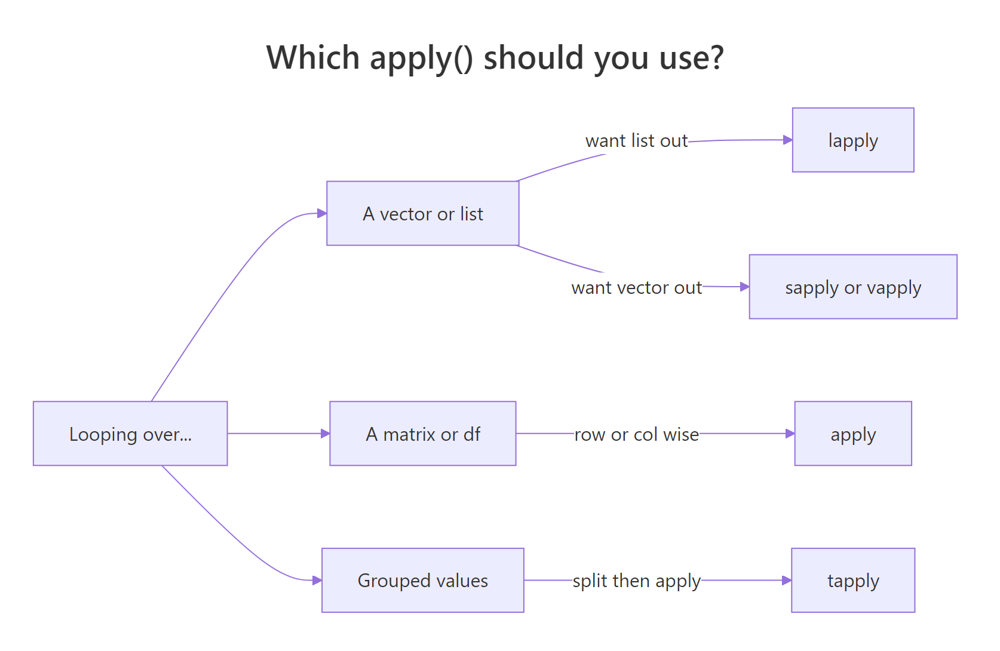
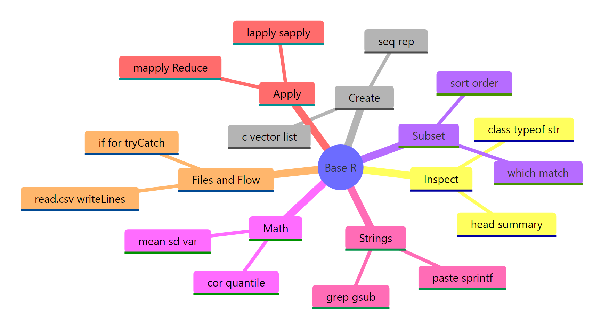

R Base Functions Cheat Sheet: 100 Functions You'll Use in Real Work
These are the 100 base R functions working analysts reach for day after day, no packages, no setup, just tools shipped with a fresh R install. Every function is grouped by the task you're doing, with a one-line signature and a runnable example you can try right on the page.
How do you inspect an unknown R object?
When you meet a new data object, the first question is always the same, what is this thing? Base R ships a handful of inspection functions that answer that in seconds. class() gives you the high-level type, str() shows the full structure, summary() gives a quick five-number snapshot, and head() lets you peek at the first few rows. If you only learn one of them, learn str(), it usually tells you everything else at a glance.
Let's point those four at the built-in mtcars data frame and see what they print.
Three function calls and we already know mtcars is a data frame with 32 rows and 11 numeric columns, the first few of which include fuel economy (mpg) and weight (wt). This is the default first move on any new object, no plotting, no printing the whole thing, just let base R describe it.
summary() goes one level deeper. It returns a per-column five-number summary (min, 1st quartile, median, mean, 3rd quartile, max) and counts NA values for free, which is exactly what you want when screening a dataset for missing data.
37 NAs out of 153 observations, roughly a quarter of the column is missing. That's the kind of detail summary() surfaces instantly and most loops over the data would miss. From here you'd decide whether to drop, impute, or segment those rows before anything else.
Inspection reference
| # | Function | What it does |
|---|---|---|
| 1 | class(x) |
High-level class ("numeric", "data.frame", "list") |
| 2 | typeof(x) |
Internal storage mode ("double", "integer", "character") |
| 3 | str(x) |
Compact structure view, types, dims, first values |
| 4 | summary(x) |
Per-column five-number summary + NA counts |
| 5 | head(x, n) |
First n rows or elements (default 6) |
| 6 | tail(x, n) |
Last n rows or elements |
| 7 | length(x) |
Number of elements (vector) or columns (data frame) |
| 8 | dim(x) |
Rows × columns of a matrix or data frame |
| 9 | names(x) |
Element or column names |
| 10 | attributes(x) |
Everything R hangs on an object, dim, names, class |
| 11 | is.na(x) |
Logical vector of missing positions |
Try it: Use str() and summary() on the iris dataset, then figure out how many iris rows belong to the setosa species.
Click to reveal solution
Explanation: summary() on a factor returns a frequency table, which is the fastest way to count groups without loading any packages.
How do you create and combine R objects?
Before you can analyse anything you need to build it. Base R has a compact set of constructors for the three core object types, vectors, lists, and data frames, plus helpers like seq() and rep() that save you from typing out long sequences. Once objects exist, rbind(), cbind(), and append() let you grow them.
Start with the sequence generators. seq() is the general form, seq_len() is the safe version for "1 to n", and seq_along() gives you the positions of an existing vector, which is the correct way to loop, since seq_along() returns integer(0) on an empty input where 1:length(x) would misfire.
Three short calls cover 90% of what you'll ever need from sequence generators. Note seq(0, 1, by = 0.25) uses named arguments, that's the idiomatic style because the positional form is easy to misread.
Next, combine a few vectors into a data frame, then stack another row onto it with rbind().
data.frame() takes named vectors of equal length and glues them into columns. rbind() stacks rows when the column names match, if they don't, it errors out, which is the behaviour you want. For wide data, cbind() is the column-wise twin.
Create and combine reference
| # | Function | What it does |
|---|---|---|
| 12 | c(...) |
Combine values into a vector (coerces to common type) |
| 13 | vector("numeric", n) |
Pre-allocate a vector of given type and length |
| 14 | list(...) |
Build a heterogeneous list |
| 15 | seq(from, to, by) |
Regular sequence, supports by or length.out |
| 16 | seq_len(n) |
Safe 1:n that works when n = 0 |
| 17 | seq_along(x) |
Positions 1:length(x) (also safe on empty input) |
| 18 | rep(x, times) |
Repeat a value or pattern |
| 19 | numeric(n) |
Vector of n zeros |
| 20 | character(n) |
Vector of n empty strings |
| 21 | data.frame(...) |
Build a data frame from named columns |
| 22 | matrix(data, nrow, ncol) |
Build a matrix from a vector |
| 23 | rbind(a, b) |
Stack rows |
| 24 | cbind(a, b) |
Bind columns |
| 25 | append(x, values, after) |
Insert values into a vector |
| 26 | unlist(x) |
Flatten a list into a vector |
c(1, "a") returns c("1", "a"), a character vector, not an error. This turns numeric columns into strings when one stray text value sneaks in. Check typeof() after any c() that mixes sources.Try it: Build a data frame of 5 students with name and score columns, then add a sixth row using rbind().
Click to reveal solution
Explanation: rbind() accepts a one-row data frame as long as its column names match. Using data.frame(name = "Fay", score = 77) inline is cleaner than building a named vector.
How do you subset, search, and sort data?
Once data exists, most of your time goes into picking the right rows. Base R gives you three complementary tools: bracket subsetting ([ ]), logical filters (which(), %in%), and sort functions (sort(), order()). Learn the difference between sort() and order(), mixing them up is one of the most common base R bugs.
Let's pull the rows from mtcars where horsepower is above 200 and the car has 6 or 8 cylinders. which() converts a logical vector into row positions, and %in% tests set membership.
Five cars match. Subsetting by row positions (cars[idx, ...]) is base R's workhorse, dplyr::filter() just wraps this same operation in nicer syntax. Combining which() with %in% scales to almost any row-filter task.
To rank those cars by mpg, use order(), not sort(). sort() returns sorted values and loses the row identity; order() returns the positions you need to reshuffle the original rows.
The top three cars by mpg are all four-cylinder compacts, unsurprising, but the point is that cars[order(...), ] is the canonical base R idiom for sorting a data frame by a column.
Subset, search, sort reference
| # | Function | What it does |
|---|---|---|
| 27 | x[i] |
Element by position or logical vector |
| 28 | x[[i]] |
Single element (strips list structure) |
| 29 | x$name |
Column or named element |
| 30 | which(cond) |
Positions where cond is TRUE |
| 31 | which.max(x) |
Position of the maximum |
| 32 | which.min(x) |
Position of the minimum |
| 33 | match(a, b) |
First position of each a element within b |
| 34 | a %in% b |
Logical set-membership test |
| 35 | any(cond) |
TRUE if at least one value is TRUE |
| 36 | all(cond) |
TRUE if every value is TRUE |
| 37 | subset(df, cond) |
Convenience filter, avoid inside functions |
| 38 | sort(x) |
Return x sorted |
| 39 | order(x) |
Return positions that would sort x |
| 40 | rank(x) |
Rank of each element |
| 41 | rev(x) |
Reverse order |
| 42 | unique(x) |
Unique values |
| 43 | duplicated(x) |
Logical vector marking duplicates |
sort() only on standalone vectors. For data frames, always go through df[order(col), ] so every row stays glued to its partner columns. Getting this wrong silently misaligns your data.Try it: Find the three cars in mtcars with the highest hp, return a small data frame showing hp, mpg, and cyl for just those rows.
Click to reveal solution
Explanation: order(..., decreasing = TRUE) returns positions sorted high-to-low, and head(..., 3) keeps the top three. Chaining them is the base R equivalent of arrange(desc(hp)) |> slice_head(n = 3).
What math and statistics functions come built in?
Every summary stat you'd grab from a textbook is one call away in base R. The big ones, mean(), median(), sd(), var(), quantile(), cor(), all accept a numeric vector and return a scalar or short vector. The one detail everyone forgets: most of them need na.rm = TRUE when missing values are present, otherwise they return NA.
Let's compute a manual five-number summary of mpg using these primitives, which is a useful drill even when summary() does it for you.
The median (19.2) is noticeably lower than the mean (20.09), hinting at a right-skewed distribution, a few thirsty muscle cars pull the average up. Reading skew off raw numbers like this is a daily habit worth building.
Correlation is the other statistic you'll run constantly. cor() takes two numeric vectors and returns Pearson's coefficient, which round() cleans up for display.
−0.87 is a strong negative correlation, heavier cars use more fuel, exactly as physics predicts. cor(df) on a whole data frame returns the full correlation matrix, which is the other form you'll reach for.
Math and statistics reference
| # | Function | What it does |
|---|---|---|
| 44 | sum(x) |
Total of all elements |
| 45 | mean(x) |
Arithmetic mean |
| 46 | median(x) |
Middle value |
| 47 | var(x) |
Sample variance |
| 48 | sd(x) |
Sample standard deviation |
| 49 | min(x) |
Smallest value |
| 50 | max(x) |
Largest value |
| 51 | range(x) |
c(min, max) in one call |
| 52 | quantile(x, probs) |
Any quantile, default is the five-number summary |
| 53 | cor(x, y) |
Pearson correlation (or matrix) |
| 54 | cov(x, y) |
Covariance |
| 55 | round(x, d) |
Round to d decimal places |
| 56 | ceiling(x) |
Round up to nearest integer |
| 57 | floor(x) |
Round down to nearest integer |
| 58 | abs(x) |
Absolute value |
| 59 | exp(x) |
e raised to x |
| 60 | log(x, base) |
Natural log by default; pass base for others |
| 61 | sqrt(x) |
Square root |
mean(airquality$Ozone) returns NA because the column has 37 missing values. mean(airquality$Ozone, na.rm = TRUE) returns 42.13. This is the single most-common cause of "why is my stat NA?" in base R.Try it: Compute the mean and standard deviation of mtcars$hp, rounded to 2 decimals.
Click to reveal solution
Explanation: Wrapping c(mean = ..., sd = ...) in round() gives a single named vector, cleaner than calling round() twice.
How do you work with strings in base R?
String handling in base R is less elegant than stringr, but every function you need is built in, paste, search, replace, split, and they all work without loading anything. The two families to know are the paste family (construction) and the grep family (search and replace).
For building strings, paste0() concatenates without a separator and sprintf() handles format specifiers like %d and %.2f. Use sprintf() whenever you need fixed decimal places or zero-padding.
sprintf("%03d", ids) pads each integer to three digits with leading zeros, and paste0() glues the prefix and suffix around it, the idiomatic way to generate well-sorted filenames. This pattern comes up any time you're writing batch outputs.
For search and replace, grepl() returns a logical vector ("does this row match?"), grep() returns positions, and gsub() replaces all matches. Regex is supported by default.
Three common operations, trim, lowercase, search, chained in four lines, all base R. gsub() replaces every occurrence; its cousin sub() replaces only the first. Both take regex, so gsub("\\s+", "_", x) collapses any whitespace to a single underscore.
Strings reference
| # | Function | What it does |
|---|---|---|
| 62 | paste(..., sep) |
Concatenate with separator (default " ") |
| 63 | paste0(...) |
Concatenate with no separator |
| 64 | sprintf(fmt, ...) |
Format strings with %d, %f, %s etc. |
| 65 | nchar(x) |
Number of characters per string |
| 66 | substr(x, start, stop) |
Extract a substring |
| 67 | toupper(x) |
Uppercase |
| 68 | tolower(x) |
Lowercase |
| 69 | trimws(x) |
Strip leading/trailing whitespace |
| 70 | grepl(pattern, x) |
Logical vector of matches |
| 71 | grep(pattern, x) |
Positions (or values with value = TRUE) |
| 72 | gsub(pat, rep, x) |
Replace all matches |
| 73 | sub(pat, rep, x) |
Replace first match only |
| 74 | strsplit(x, split) |
Split each string on a separator |
paste0("$", round(x, 2)) gives you "$3.1" when x = 3.1; sprintf("$%.2f", x) gives you "$3.10". Anywhere you need fixed decimal places, leading zeros, or fixed-width columns, sprintf() is the right tool.Try it: From a vector of email addresses, extract just the domains using sub() and a regular expression.
Click to reveal solution
Explanation: The regex ^.*@ matches everything from the start of the string through the @ sign, and sub() replaces that match with the empty string, leaving just the domain.
How does the apply family replace loops?
Most R beginners reach for for loops out of habit from other languages. Base R's apply family does the same job in one line, runs faster, and returns clean output shapes. The catch is picking the right variant, lapply, sapply, vapply, apply, tapply, Map, and Reduce each solve a different flavour of "run this function over a collection".

Figure 1: How to pick the right apply() variant for your input and desired output.
sapply() is the friendliest starting point, it runs a function over each element of a vector or list and tries to simplify the result into a vector or matrix. For the common case of "column means of a numeric data frame", it's a one-liner.
One line, four means. Internally sapply() calls mean() on each column and wraps the results into a named numeric vector. No loop, no pre-allocated output vector, no index variable.
When you need a grouped statistic, "mean mpg by cylinder count", tapply() is the right tool. It splits the first argument by the second, then applies the function to each group.
Four-cylinder cars average 26.7 mpg; V8s drop to 15.1. tapply() returns a named vector indexed by the grouping factor, which is exactly the output you want for a quick group comparison without reaching for dplyr::group_by() |> summarise().
Apply family reference
| # | Function | What it does |
|---|---|---|
| 75 | lapply(x, fn) |
Apply fn to each element, always return a list |
| 76 | sapply(x, fn) |
Like lapply, but simplify to a vector or matrix if possible |
| 77 | vapply(x, fn, FUN.VALUE) |
Like sapply, but check the return type, safer |
| 78 | mapply(fn, ...) |
Multivariate version, iterate over multiple arguments in parallel |
| 79 | apply(m, MARGIN, fn) |
Apply over rows (1) or columns (2) of a matrix/data frame |
| 80 | tapply(x, group, fn) |
Split x by group and apply fn to each chunk |
| 81 | Map(fn, ...) |
Parallel map that always returns a list |
| 82 | Reduce(fn, x) |
Fold a binary function across a vector (sum, concatenation, etc.) |
sapply is fine. In functions you ship to other people, prefer vapply, it fails loudly if a row returns the wrong type, which is exactly the bug you want to catch early.Try it: Use sapply() to compute the maximum of every numeric column in mtcars.
Click to reveal solution
Explanation: Every column in mtcars is numeric, so sapply(ex_mt, max) calls max() on each one and collapses the results into a named vector, the same output shape you'd get from summarise(across(everything(), max)).
How do you handle files, control flow, and errors?
The last group covers the plumbing, reading files, branching on conditions, looping when you have to, and recovering from errors. Most of these functions look almost identical in every other language, so there's nothing exotic to learn. The one R-specific trap worth flagging: if / else returns a scalar, and ifelse() returns a vector. Use the right one for the right job.
Start with vectorised branching. ifelse() walks through each element of its condition and picks from two parallel vectors. That makes it perfect for recoding.
ifelse() solves the recode in one vectorised call, no loop, no index. The explicit for loop that follows is there to show the plain-old if form inside a loop, which you still need for rare cases like running sums with dependencies across iterations. For anything else, prefer the vectorised version.
Last, wrap a failure-prone operation in tryCatch() so a single bad input doesn't crash the whole script. The classic example is dividing by a user-supplied value that might be zero.
tryCatch() runs the first argument and, if it throws an error or a warning, returns whatever the matching handler returns. Here, bad inputs like "ten" / 2 collapse to NA_real_ instead of crashing. Note that 10 / 0 is Inf in R (not an error), so dividing by zero would return Inf, not NA, catching that needs a separate if (b == 0) check.
Files, control flow, errors reference
| # | Function | What it does |
|---|---|---|
| 83 | read.csv(file) |
Read a CSV into a data frame |
| 84 | read.table(file, ...) |
Read whitespace/delimited data |
| 85 | write.csv(x, file) |
Write a data frame to CSV |
| 86 | readLines(con) |
Read a file as a character vector of lines |
| 87 | writeLines(x, con) |
Write a character vector as lines |
| 88 | file.exists(path) |
TRUE if the path exists |
| 89 | file.path(a, b) |
Cross-platform path join |
| 90 | list.files(path) |
List files in a directory |
| 91 | if (cond) ... else ... |
Scalar branch, returns a single value |
| 92 | ifelse(cond, yes, no) |
Vectorised branch, returns a vector |
| 93 | for (x in xs) ... |
Iterate over a vector |
| 94 | while (cond) ... |
Loop while a condition holds |
| 95 | break |
Exit a loop early |
| 96 | next |
Skip to the next iteration |
| 97 | tryCatch(expr, ...) |
Run expr; catch errors and warnings |
| 98 | stop("msg") |
Throw an error |
| 99 | warning("msg") |
Emit a warning (execution continues) |
| 100 | invisible(x) |
Return x without printing (for side-effect functions) |
if (x > 0) "pos" else "neg" works on one value. ifelse(x > 0, "pos", "neg") works on a whole vector. Swap them and you'll either get a cryptic "condition has length > 1" error, or, worse, silently lose all but the first element.Try it: Write a safe_log() function that returns NA for any non-positive input, using tryCatch().
Click to reveal solution
Explanation: stop() raises an error when the input is non-positive; the error handler in tryCatch() catches it and returns NA_real_. Any real logging error (for example log("ten")) is caught by the same handler.
Practice Exercises
Two capstone problems that combine functions from several of the categories above. Both are solvable with just base R, no packages.
Exercise 1: Top-3 cars per cylinder group (medium)
From mtcars, return the 3 cars with the best mpg within each cyl group. The output should be a single data frame sorted by cyl then by mpg descending. Use split() to break the data into groups, lapply() to process each group, and do.call(rbind, ...) to stitch the pieces back together.
Click to reveal solution
Explanation: split() returns a named list, one data frame per cyl value. lapply() sorts each group by -mpg (which gives descending order) and keeps the top three. do.call(rbind, ...) stacks them back into one data frame. This three-step pattern is the base R equivalent of group_by(cyl) |> slice_max(mpg, n = 3).
Exercise 2: Write your own describe() (hard)
Write a function describe(df) that takes a data frame and returns a new data frame with one row per numeric column, showing n, mean, sd, min, max, and n_na. Use sapply() over numeric columns and build the output with data.frame(). Test it on airquality, which has missing values.
Click to reveal solution
Explanation: sapply(df, is.numeric) gives a logical vector that selects numeric columns. The inner sapply() computes six statistics per column and returns a 6×k matrix. t() transposes it into column-summary rows, and as.data.frame(round(...)) produces a clean printable summary, roughly what psych::describe() does, in ten lines of base R.
Putting it all together: a complete base-R analysis
Let's close the loop by solving a real task end-to-end with only the functions above: load airquality, drop rows where Ozone is missing, summarise Ozone by Month, and print a short report.
Six base R functions, is.na(), tapply(), round(), sprintf(), writeLines(), plus bracket subsetting, carry the whole job from raw data to formatted report. No packages, no ceremony. The peak in July and August (~60 ppb) is the well-known summer ozone bump. This is the kind of throwaway task where base R is fastest, because you don't pay the import overhead of loading other packages just to run five lines of code.
Summary

Figure 2: The 100 base R functions grouped into seven task-oriented categories.
The 100 functions on this page cover roughly 95% of what a working analyst asks base R to do. If you're starting out, memorise the top 20 below first, they come up in almost every session.
The top 20 you'll use daily
| # | Function | Category |
|---|---|---|
| 1 | str() |
Inspection |
| 2 | summary() |
Inspection |
| 3 | head() |
Inspection |
| 4 | c() |
Create |
| 5 | seq() |
Create |
| 6 | data.frame() |
Create |
| 7 | which() |
Subset |
| 8 | %in% |
Subset |
| 9 | order() |
Subset |
| 10 | mean() |
Math |
| 11 | sd() |
Math |
| 12 | cor() |
Math |
| 13 | round() |
Math |
| 14 | paste0() |
Strings |
| 15 | sprintf() |
Strings |
| 16 | gsub() |
Strings |
| 17 | sapply() |
Apply |
| 18 | tapply() |
Apply |
| 19 | ifelse() |
Control flow |
| 20 | tryCatch() |
Control flow |
Key takeaways:
- Organise by task, not alphabet. Finding the right function is easier when you ask "what am I doing?" than "what's it called?"
str()is the most valuable one call. Run it on any new object and 70% of your questions are already answered.- Prefer
order()oversort()on data frames. It keeps rows aligned. - Learn the apply family before writing loops.
sapply()andtapply()replace 90% of beginnerforloops. - Always pass
na.rm = TRUEwhen a column might contain missing values. ifelse()is vectorised;if/elseis scalar. Using the wrong one silently drops data.
References
- R Core Team. An Introduction to R. Link
- Wickham, H. Advanced R (2nd ed.), Chapter 2: Names and values. Link
- R Documentation, base package index. Link
- R Core Team. The R Language Definition. Link
- Venables, W. N., & Ripley, B. D. Modern Applied Statistics with S, 4th ed. Springer (2002).
- Matloff, N. The Art of R Programming. No Starch Press (2011).
Continue Learning
- Write Better R Functions: Arguments, Defaults, Scope & When to Vectorise, Build your own functions once you've mastered the built-ins.
- R Vectors Explained: Create, Subset, and Combine Like a Pro, Deep-dive on the core data structure every function above operates on.
- Getting Help in R, When 100 functions isn't enough, this is how to find the 101st.